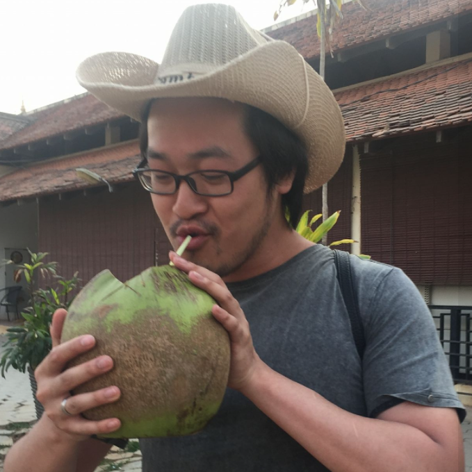

Team Profile
Nayli
ID: s3882267
Link to Personal Website
I’m a first-year student of Bachelor of Information Technology and am currently based in Malaysia due to covid. My interests include crocheting, online shopping and watching sitcoms. I’ve been working on crocheting a cardigan ever since the semester began and I still haven’t finished it even though the semester is ending. I’ve been looking at building mechanical keyboards lately, so maybe I’ll dive into that during my semester break.
I have quite limited IT experience, as I only did basic C programming before but I’m keen to learn more and am very passionate about what I’m learning. I hope that I can master more programming languages as I progress into my degree. My interests in IT are quite broad but I’m mostly interested in Artificial Intelligence and hoping that I can eventually major in that sector.
Role
Nayli analyses the software used to create the game and suggests design ideas for the game and website. She is also in charge of assessing the usability of the website and game to ensure easy accessibility and minimizing the number of errors.
Malanie
ID: s3708323
Link to Personal Website
I am in my final semester of Bachelor of Applied Science (Psychology). I am Chinese by ethnicity and was born in Malaysia then moved to Singapore when I was 11. In 2017, I moved to Melbourne to pursue foundation studies and a bachelor's degree. I enjoy reading, going to the gym and cooking in my free time. I have no IT experience. In psychology, there are no subjects that focus on IT specifically. However, there have been a few lectures conducted on how the world of psychology and IT interact as everything becomes more digitalised. I can definitely see the value of IT in terms of creating a mental health app, or even my own website for clinical practice and even how psychology can inform IT in terms of personalization in user experience. Learning something outside of my comfort zone will equip me with new skills that could potentially be useful in the long run.
Role
Melanie is the project manager who allocates everyone their weekly tasks in order to meet the deadline, this is outlined under “Timeframe”. She also works on converting game related dot points into paragraphs, formatting, editing out phrasing, spelling and grammar mistakes in the report to ensure a coherent flow.

Shuyun
ID: s3845796
Link to Personal Website
I am an IT beginner who is in her second year at RMIT, which means that I still have a lot to learn. I am Chinese and am currently doing uni online from the comfort of my home in China due to Covid. I am looking forward to being back in the RMIT campus. I graduated from Elwood College Melbourne. I enjoy music, cooking, pc games and making new friends. I have a pet dog, named Zhuanzhuan. While preparing for my college entrance examination, I developed an interest in IT through my math teacher who is a graduate of the IT program. I am drawn to IT as it is a high-paying profession. More importantly, the IT industry covers a wide range of jobs in various industries.
Role
ShuYun assists the rest of the group members in brainstorming ideas and doing research for various parts of the report such as the aims, goals, jobs and game idea development. She works closely with Melanie and Bibow to ensure a coherent flow of information in the report.
Chansouda
ID: s3623402
Link to Personal Website
Call me Bibo or Bow as these are my nicknames. Laos is my hometown but I can speak Thai as Thai is a similar language to Lao. I have been studying at RMIT since foundation studies and am currently doing a Bachelor of Business (International Business). I am in my third year and this semester will be my final semester of my studies. However, I would like to visit Australia again because I miss my friends. In my spare time I like to watch anime and play games. I have no experience with IT but IT sounds very interesting. Also, IT studies will assist me in my future career. IT is very important to the world of business and is definitely a plus if I have some IT skills.
Role
Bibow assists the rest of the group members in brainstorming ideas and doing research for various parts of the report such as the aims, goals, jobs and game idea development. She works closely with Melanie and ShuYun to ensure a coherent flow of information in the report.

Kelvin
ID: s3283521
Link to Personal Website
Kelvin often also goes by Ck. Graduated high school in ’09. Lived himself a quiet life often in the shadows of many others during his younger years striving to become a part of the limelight. Living a quiet life with all his time spent on sleep, nerdy hobbies, and a missus. Apparently, this lifestyle choice is also backed up by some personality tests, scoring a 91% on the introversion scale on the Myer Briggs Personality test.
Occasionally going travelling, well not so much anymore due to the spicy cough epidemic, but would often go to the great outdoors, turn off my brain and fish for multiple hours on end. Even if I caught nothing but a cold, it was still fun for me.
IT has always been something of interest to me, I still remember playing my first ever game from a CD, Warcraft 2: Tides of Darkness on my very first computer. From there my love of technology and computers just grew from there.
Role
Kelvin's role is asset creator and organiser, due to his decade long experience in playing games and his elitism for a game to look even remotely good to even play it, he tried his hand at creating the art and maps for the game. Due to time constraints, Kelvin relied on pre-made tile sets to assemble his maps, trees, foliage, fences and buildings. Despite the assets being pre-made, the map layouts themselves were still created from scratch. Kelvin purchased Aseprite to make pixel art characters. If you look at the characters you can definitely see improvement and progress as more sprites were made.

Yu-Cheng
ID: s3878874
Link to Personal Website
Yu-Cheng, or Jacky. A 21-year-old young man from Taiwan who is doing a Bachelors in IT at RMIT university. Having studied music at University of Sydney, I especially enjoy music and other types of art performances. I enjoy making friends from all over the world, coupled with my outgoing and extroverted personality (though I can be shy sometimes). My interests in IT started not long ago when one of my friends in RMIT showed me the magic and art of computing. Since I have limited experience in IT, I will need the guidance of RMIT staff to improve my IT skills. One day, I will achieve my goal of working as an IT manager at Google.
Role
Yu-Cheng is the meeting organiser who is responsible for recording all the meeting agenda, video recording, and actions for each week. He is also a front-end developer who works on coding the website using HTML and CSS. He is also the game developer and programmer in the game development process such as coding the functions, features, and programs for the prototype. After finalising the prototype, he used JavaScripts pre-created by the game to embed the game prototype into the website and now it is playable on the website.
Our Career Plans


Nayli, Yu-Cheng and Kelvin’s career plans are largely IT based and require more IT knowledge and skills. These IT skills include coding, data management, cybersecurity, data analysis, statistical analysis, machine learning, algorithms and understanding of networks. Despite these jobs being in an IT field, job scopes vary in terms of the skills required to carry out various responsibilities and working with different people.
Melanie and ShuYun’s career plans however require little to none IT knowledge and skills but relies heavily on interpersonal skills. However, IT skills can be useful in any job such as if she finds herself wanting to create an app or website containing resources for her patients to use.
Bibows career plan relies heavily on problem solving and analytical thinking. Her job scope requires minimal IT skills such as a general understanding of how systems, products and tools work.
Processes Along the Way
Despite some of our group members being naturally more introverted, everyone still attended and actively participated in group meetings though a few of us did not attend the tutorials. We had a very productive workflow as everyone was cooperative, open to new ideas, receptive of feedback and responsible in completing each task assigned to them on time. In terms of the tasks each of us were assigned, we played to our strengths and weaknesses just like how within the world of IT, there are different job scopes based on what someone is proficient in. Jacky and Nayli are really great at designing websites, Kelvin is more knowledgeable in the game making and game industry end, ShuYun and Melanie focus more on the report writing and making sure everything is in order. Bibow is our newest group member due to her previous group being disbanded. So far, Bibow has attended the three meetings we had and has actively participated and made valuable suggestions as well.
Moving forward, we will have slightly different roles and responsibilities. Due to our late start to this assignment (slightly over two weeks till the deadline), we will all need to take on more work over the next two weeks. This will require more efficient time management and for all members to attend, contribute ideas and communicate any challenges during every meeting till then.